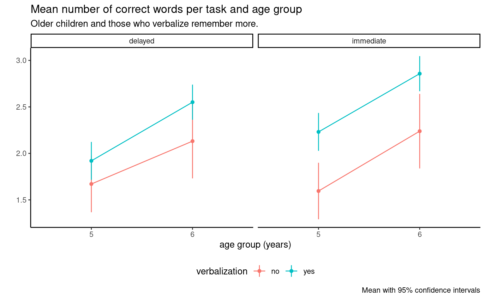
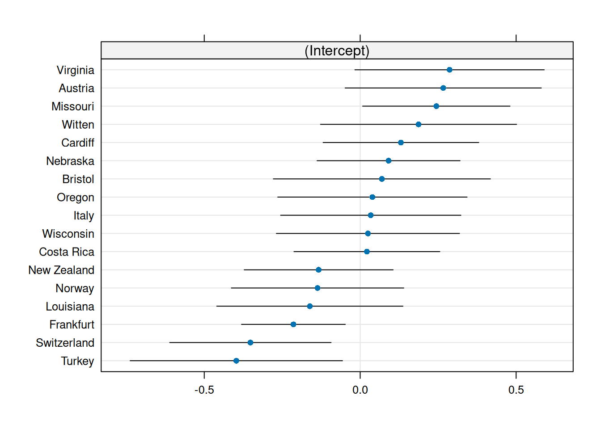
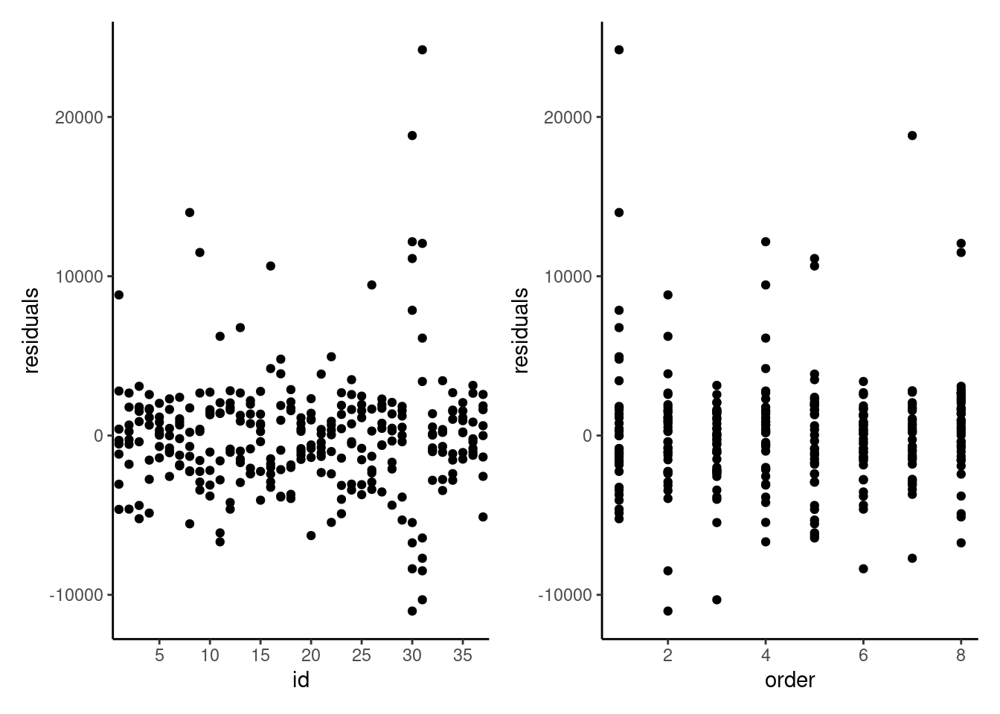

data(LRMM23_S3, package = "hecedsm")
# Paired t-test
ttest <- with(LRMM23_S3, t.test(apprec_init, apprec_resp, paired = TRUE))12 Introduction to mixed models
This chapter considers tools for models with repeated measures from a modern perspective, using random effects for modelling. This class of model, called hierarchical models, multilevel models or mixed models in simple scenarios, give us more flexibility to account for complex scenarios in which there may be different sources of variability.
For example, consider a large-scale replication study about teaching methods. We may have multiple labs partaking in a research program and each has unique characteristics. Because of these, we can expect that measurements collected within a lab will be correlated. At the same time, we can have repeated mesures for participants in the study. One can view this setup as a hierarchy, with within-subject factor within subject within lab. In such settings, the old-school approach to analysis of variance becomes difficult, if not impossible; it doesn’t easily account for the heterogeneity in the lab sample size and does not let us estimate the variability within labs.
We begin our journey with the same setup as for repeated measures ANOVA by considering one-way within-subject ANOVA model. We assign each participant (subject) in the study to all of the experimental treatments, in random order. If we have one experimental factor \(A\) with \(n_a\) levels, the model is \[\begin{align*}\underset{\text{response}\vphantom{l}}{Y_{ij}} = \underset{\text{global mean}}{\mu_{\vphantom{j}}} + \underset{\text{mean difference}}{\alpha_j} + \underset{\text{random effect for subject}}{S_{i\vphantom{j}}} + \underset{\text{error}\vphantom{l}}{\varepsilon_{ij}}. \end{align*}\] In a random effect model, we assume that the subject effect \(S_i\) is a random variable; we take \(S_i \sim \mathsf{Normal}(0, \sigma^2_s)\) and the latter is assumed to be independent of the noise \(\varepsilon_{ij} \sim \mathsf{Normal}(0, \sigma^2_e)\). The model parameters that we need to estimate are the global mean \(\mu\), the mean differences \(\alpha_1, \ldots, \alpha_{n_a}\), the subject-specific variability \(\sigma^2_s\) and the residual variability \(\sigma^2_e\), with the sum-to-zero constraint \(\alpha_1 + \cdots + \alpha_{n_a}=0\).
Inclusion of random effects introduces positive correlation between measurements: specifically, the correlation between two observations from the same subject will be \(\rho=\sigma^2_s/(\sigma^2_s+\sigma^2_e)\) and zero otherwise. This correlation structure is termed compound symmetry, since the correlation between measurements, \(\rho\), is the same regardless of the order of the observations. If there are multiple random effects, the dependence structure will be more complicated.
In the repeated measure models, we need to first reduce measurements to a single average per within-subject factor, then fit the model by including the subject as a blocking factor. We are therefore considering subjects as fixed effects by including them as blocking factors, and estimate the mean effect for each subject: the value of \(\sigma^2_s\) is estimated from the mean squared error of the subject term, but this empirical estimate can be negative. By contrast, the mixed model machinery will directly estimate the variance term, which will be constrained to be strictly positive.
12.1 Fixed vs random effects
Mixed models include, by definition, both random and fixed effects. Fixed effects are model parameters corresponding to overall average or difference in means for the experimental conditions. These are the terms for which we want to perform hypothesis tests and compute contrasts. So far, we have only considered models with fixed effects.
Random effects, on the other hand, assumes that the treatments are random samples from a population of interest. If we gathered another sample, we would be looking at a new set of treatments. Random effects model the variability arising from the sampling of that population and focuses on variance and correlation parameters. Addition of random effects does not impact the population mean, but induces variability and correlation within subject. There is no consensual definition, but Gelman (2005) lists a handful:
When a sample exhausts the population, the corresponding variable is fixed; when the sample is a small (i.e., negligible) part of the population the corresponding variable is random [Green and Tukey (1960)].
Effects are fixed if they are interesting in themselves or random if there is interest in the underlying population (e.g., Searle, Casella and McCulloch [(1992), Section 1.4])
In terms of estimation, fixed effect terms are mean parameters, while all random effects will be obtained from variance and correlation parameters. In the repeated measure approach with fixed effects and blocking, we would estimate the average for each subject despite the fact that this quantity is of no interest. Estimating a mean with only a handful of measurements is a risky business and the estimated effects are sensitive to outliers.
Random effects would proceed to directly estimate the variability arising from different subjects. We can still get predictions for the subject-specific effect, but this prediction will be shrunk toward the global mean for that particular treatment category. As we gather more data about the subjects, the predictions will become closer to the fixed effect estimates when the number of observations per subject or group increases, but these prediction can deviate from mean estimates in the case where there are few measurements per subject.
Oehlert (2000) identifies the following step to perform a mixed model
- Identify sources of variation
- Identify whether factors are crossed or nested
- Determine whether factors should be fixed or random
- Figure out which interactions can exist and whether they can be fitted.
Sources of variations are all factors (including identifiers) which could influence the response.
We say to factors are nested (\(A\) within \(B\)) when one can only coexist within the levels of the other: this has implications, for we cannot have interaction between the two. In between-subject experiments, subjects are nested in between-subject factors and the experimental factors are crossed, meaning we can assign an experimental unit or a subject to each factor combination. Interactions can occur for the between-subject factors, although we need participants in each subcategory to estimate them. In a between-subjects design, subjects are nested within experimental condition, as a subject can only be assigned a single treatment. In a within-subjects designs, experimental factors and subjects are crossed: it is possible to observed all combination of subjects and experimental conditions.
12.2 Blocking factors
In many instances, some of the characteristics of observational units are not of interest: for example, EEG measurements of participants in a lab may differ due to time of the day, to the lab technician, etc. In the old days, it was customary to include these as fixed effect factors in the analysis, but disregard tests. We term explanatory factors (fixed effects) that are used only to control unwanted variability blocking factors: variables that impact the measurement variability, but that are not of direct interest. By filtering their effect out and looking at the residual variability that is unexplained by the blocking factors, block designs reduce the error term, at the cost of including and estimating additional parameters (group averages). Experimental units are typically assigned to blocking factor using stratified sampling to ensure comparisons can be made.
We will analyse block designs in the same as we did for multi-way analysis of variance model, with one notable exception. Typically, we will assume that there is no interaction between experimental factor and blocking factors, but we can always check for this assumption. Thus, we will be interested mostly in main effects of the experimental factors.
Example 12.1 (The surprise of reaching out: paired data as blocking factors) We consider paired data from Study 3 of Liu et al. (2023), who looked at the appreciation of people reaching out to them in a unsolicited manner. The data includes the appreciation score of both responder and initiator, along with sociodemographic variables (age and gender).
While a paired \(t\)-test is the natural (and arguably simplest way) to compare the difference in appreciation scores, we reformat the data to long format (one response per line), with a categorical variable role indicating the role of the participant and dyad, a dummy number indicating which participants belong to which pair. We then fit an analysis of variance model to the scores with both dyad and role. The \(F\)-tests for the main effects indicate that the dyads (66 additional parameters, since there are 67 pairs) filter out significant part of the variability. If we consider estimated marginal means and look at the \(p\)-value and the pairwise difference between initiator and respondent, we find exactly the same statistic value -4.6, with \(66\) degrees of freedom and \(p\)-value for the pairwise difference as the paired \(t\)-test.
# Cast data to long format - one response/participant per line
LRMM23_S3l <- LRMM23_S3 |>
dplyr::mutate(dyad = factor(dplyr::row_number())) |>
tidyr::pivot_longer(
cols = !dyad,
names_to = c(".value", "role"),
names_sep = "\\_")
# Format of the data
head(LRMM23_S3l)
# Treat dyad as a factor and fit two-way ANOVA model
mod <- lm(apprec ~ role + dyad, data = LRMM23_S3l)
# Global tests of main effects (balanced data)
aov <- anova(mod) # There seems to be significant variability filtered out by 'id'
# Compute pairwise difference for main effect of 'role'
emmeans::emmeans(mod, spec = "role") |>
emmeans::contrast("pairwise")| dyad | role | apprec | age | gender |
|---|---|---|---|---|
| 1 | resp | 4 | 20 | male |
| 1 | init | 4 | 20 | male |
| 2 | resp | 5 | 20 | female |
| 2 | init | 5 | 24 | female |
| 3 | resp | 5 | 21 | female |
| 3 | init | 4 | 21 | female |
| term | sum of squares | df | stat | p-value |
|---|---|---|---|---|
| role | 1 | 7.17 | 21.20 | <0.001 |
| dyad | 66 | 51.97 | 2.33 | <0.001 |
| Residuals | 66 | 22.33 |
role for Study 3 of Liu et al. (2023).
| term | contrast | std. error | df | stat | p-value |
|---|---|---|---|---|---|
| init - resp | -0.46 | 0.1 | 66 | -4.6 | <0.001 |
12.3 Random effect model
Example 12.2 (Temporal distancing in peace prospects) We consider a three-way mixed design from Study 5 of Halevy and Berson (2022). The research studied how temporal distance impacted the prospects of peace by presenting participants with a fictional scenario in which two tribes in a fictional country, Velvetia, where either at war or peace and asking what they think the outcome would be in the near and distance future. Participants rated the likeliness using a Likert scale ranging from extremely unlikely (1) to extremely likely (7) for the question
There is currently [war/peace] between the two tribes in Velvetia. Thinking about [next year/in 20 years], how likely is it that there will be [war/peace] in Velvetia?
Each participant was assigned to a single combination of the current state curstate and the predicted outcome predout and answered the question for both temporal horizon, tempdist. A rapid examination shows that we have a complete design: there are participants assigned to each subcategory of the between-subject factors.
data(HB22_S5, package = "hecedsm")
xtabs(~ curstate + predout, data = HB22_S5) predout
curstate peace war
peace 148 164
war 118 124- The sources of variation are participants
id, between-subject factorspredoutandcurstateand within-subjects factortempdist. - Between subject factors
predoutandcurstateare crossed, whereastempdistis nested withinid. idis random, whereaspredout,curstateandtempdistare fixed effects- We can have interactions between the three experimental factors
predout,curstateandtempdistsince the database contains instances of both of the former together, and since each person gets twotempdistlevels. However, no interaction are possible betweenidandtempdist(due to lack of replication), or between between-subject factors and identifiers.
With data in long format, meaning each line contains a single response and characteristics are repeated per row, the software will automatically capture the random effect. We can fit the equivalent of the repeated measure mixed ANOVA using a linear mixed model in R, by simply specifying a random intercept for the participant id. The full model with the three-way interaction includes eight components for the mean and two variant component (residual variance, and subject-specific variance).
# In R, two packages offer linear mixed model fit via (RE)ML
# lme4 is more modern (and reliable?), but does not allow for unequal variance
lme4::lmer(likelihood ~ curstate*predout*tempdist + (1 | id),
data = HB22_S5)Linear mixed model fit by REML ['lmerMod']
Formula: likelihood ~ curstate * predout * tempdist + (1 | id)
Data: HB22_S5
REML criterion at convergence: 1933.813
Random effects:
Groups Name Std.Dev.
id (Intercept) 0.8524
Residual 1.1436
Number of obs: 554, groups: id, 277
Fixed Effects:
(Intercept) curstatewar
5.581 -2.886
predoutwar tempdist20yr
-2.337 -1.068
curstatewar:predoutwar curstatewar:tempdist20yr
5.142 3.508
predoutwar:tempdist20yr curstatewar:predoutwar:tempdist20yr
2.775 -6.554 # Note that in `lme4` package, the random effects are specified inside parenthesis
# nlme offers the possibility to acount for unequal variance per group
# Random effects are specified in `random` with formula notation, and a | to indicate
nlme::lme(likelihood ~ curstate*predout*tempdist,
random = ~ 1 | id, # random intercept per individual
data = HB22_S5)Linear mixed-effects model fit by REML
Data: HB22_S5
Log-restricted-likelihood: -966.9064
Fixed: likelihood ~ curstate * predout * tempdist
(Intercept) curstatewar
5.581081 -2.886166
predoutwar tempdist20yr
-2.337179 -1.067568
curstatewar:predoutwar curstatewar:tempdist20yr
5.142263 3.508246
predoutwar:tempdist20yr curstatewar:predoutwar:tempdist20yr
2.774885 -6.554272
Random effects:
Formula: ~1 | id
(Intercept) Residual
StdDev: 0.8523522 1.143597
Number of Observations: 554
Number of Groups: 277 Example 12.3 (Happy fakes, remixed) We consider again the experiment of Amirabdolahian and Ali-Adeeb (2021) on smiling fakes and the emotion, this time from a pure mixed model perspective. This means we can simply keep all observations and model them accordingly. To fit the model, identifiers of subjects must be declared as factors (categorical variables). If we have repeated measurements of the within-subject factor, we may consider adding a random effect for the interaction between the subject and the within-subject factor.

Figure 12.1 shows the raw measurements, including what are notable outliers that may be due to data acquisition problems or instrumental manipulations. Since the experiment was performed in a non-controlled setting (pandemic) with different apparatus and everyone acting as their own technician, it is unsurprising that the signal-to-noise ratio is quite small. We will exclude here (rather arbitrarily) measurements below a latency of minus 40.
options(contrasts = c("contr.sum", "contr.poly"))
mixedmod <- lmerTest::lmer(
latency ~ stimulus +
(1 | id) + # random effect for subject
(1 | id:stimulus), # interaction id and stimuluss
# random effect for interaction
data = hecedsm::AA21 |> #remove outliers
dplyr::filter(latency > -40))
# Output parameter estimates
print(mixedmod)Linear mixed model fit by REML ['lmerModLmerTest']
Formula: latency ~ stimulus + (1 | id) + (1 | id:stimulus)
Data: dplyr::filter(hecedsm::AA21, latency > -40)
REML criterion at convergence: 8007.913
Random effects:
Groups Name Std.Dev.
id:stimulus (Intercept) 0.7371
id (Intercept) 2.2679
Residual 6.2235
Number of obs: 1227, groups: id:stimulus, 36; id, 12
Fixed Effects:
(Intercept) stimulus1 stimulus2
-10.5374 -0.2529 -0.1394 The model includes a fixed effect for stimulus, and variance terms for stimulus (nested within id) and subject identifier id. We see that there is quite a bit of heterogeneity between participants and per stimulus participant pair, albeit less so for the interaction. All estimated variance terms are rather large. We can also look globally at the statistical evidence for the difference between the various stimuli.
# Global effect of different faces
# ANOVA here is type III effects
# computed from the 'lmerTest' package
anova(mixedmod)| term | sum of squares | df 1 | df 2 | stat | p-value |
|---|---|---|---|---|---|
| stimulus | 65.62 | 2 | 23.34 | 0.85 | 0.44 |
The global \(F\) test of significance for stimulus is based on an approximation that accounts for the correlation between observations; the denominator degrees of freedom for the approximate \(F\) statistic are based on Satterthwaite’s method. There is again no evidence of differences between experimental conditions. This is rather unsurprising if we look at the raw data in Figure 12.1.
Example 12.4 (Verbalization and memorization) We consider a replication study of Elliott et al. (2021), which studied verbalization and verbalization of kids aged 5, 6, 7 and 10. The replication was performed in 17 different school labs, adapting a protocol of Flavell, Beach, and Chinsky (1966), with an overall sample of 977 child partaking in the experiment.
Each participant was assigned to three tasks (timing): delayed recall with 15 seconds wait, or immediate, and finally a naming task (point-and-name). The taskorder variable records the order in which these were presented: the order of delayed and immediate was counterbalanced across individuals, with the naming task always occurring last. The response variable is the number of words correctly recalled out of five. The experimenters also recorded the frequency at which students spontaneously verbalized during the task (except the point-and-name task, where they were specifically instructed to do so). The latter would normally be treated as a binary or count response variable, but we treat it as an explanatory hereafter.
The timing is a within-subject factor, whereas task order and age are between-subject factors: we are particularly interested in the speech frequency and the improvement over time (pairwise differences and trend).
To fit the linear mixed model with a random effect for both children id and lab: since children are nested in lab, we must specify the random effects via (1 | id:lab) + (1 | lab) if id are not unique; otherwise, the first term is equivalent to (1|id).
We modify the data to keep only 5 and 6 years old students, since most older kids verbalized during the task and we would have large disbalance (14 ten years old out of 235, and 19 out of 269 seven years old). We also exclude the point-and-name task, since verbalization was part of the instruction. This leaves us with 1419 observations and we can check that there are indeed enough children in each condition to get estimates.
data(MULTI21_D2, package = "hecedsm")
MULTI21_D2_sub <- MULTI21_D2 |>
dplyr::filter(
age %in% c("5yo", "6yo"),
timing != "point-and-name") |>
dplyr::mutate(
verbalization = factor(frequency != "never",
labels = c("no", "yes")),
age = factor(age)) # drop unused age levels
xtabs(~ age + verbalization, data = MULTI21_D2_sub) verbalization
age no yes
5yo 106 334
6yo 56 450Given that we have multiple students of every age group, we can include two-way and three-way interactions in the \(2^3\) design. We also include random effects for the student and the lab.
hmod <- lmerTest::lmer(
mcorrect ~ age*timing*verbalization + (1 | id:lab) + (1 | lab),
data = MULTI21_D2_sub)
# Parameter estimates
#summary(hmod)We focus here on selected part of the output from summary() giving the estimated variance terms.
#> Random effects:
#> Groups Name Variance Std.Dev.
#> id:lab (Intercept) 0.3587 0.599
#> lab (Intercept) 0.0625 0.250
#> Residual 0.6823 0.826
#> Number of obs: 946, groups: id:lab, 473; lab, 17In this setting, the correlation between observations from the same individuals \(i\) in lab \(j\) for measurement \(k\) and from different individuals in the same labs are, respectively \[\begin{align*}
\mathsf{cor}(Y_{ijk}, Y_{ijk'}) &= \frac{\sigma^2_{\text{id}} + \sigma^2_{\text{lab}}}{\sigma^2_{\text{id}} + \sigma^2_{\text{lab}} + \sigma^2_{\text{res}}}, \\\mathsf{cor}(Y_{ijk}, Y_{i'jk'}) &= \frac{\sigma^2_{\text{lab}}}{\sigma^2_{\text{id}} + \sigma^2_{\text{lab}} + \sigma^2_{\text{res}}}.
\end{align*}\] We can interpret the results as follows: the total variance is the sum of the id, lab and residual variances components give us an all but negligible effect of lab with 7 percent of the total variance, versus 40.5 percent for the children-specific variability. Since there are only 17 labs, and most of the individual specific variability is at the children level, the random effect for lab doesn’t add much to the correlation.
anova(hmod, ddf = "Kenward-Roger")
# Check estimated marginal means for age
emm <- emmeans::emmeans(hmod, specs = "age")
# Pairwise differences
pairdiff <- emm |>
emmeans::contrast(method = "pairwise")| term | sum of squares | df 1 | df 2 | stat | p-value |
|---|---|---|---|---|---|
| age | 20.50 | 1 | 459.37 | 30.05 | <0.001 |
| timing | 3.25 | 1 | 469.00 | 4.76 | 0.03 |
| verbalization | 13.61 | 1 | 459.45 | 19.94 | <0.001 |
| age:timing | 0.24 | 1 | 469.00 | 0.36 | 0.55 |
| age:verbalization | 0.08 | 1 | 462.08 | 0.12 | 0.72 |
| timing:verbalization | 2.64 | 1 | 469.00 | 3.88 | 0.05 |
| age:timing:verbalization | 0.27 | 1 | 469.00 | 0.40 | 0.53 |
| age | emmeans | std. error | df | stat | p-value |
|---|---|---|---|---|---|
| 5yo | 1.85 | 0.09 | 35.83 | 20.29 | <0.001 |
| 6yo | 2.44 | 0.11 | 60.94 | 23.21 | <0.001 |
| term | contrast | std. error | df | stat | p-value |
|---|---|---|---|---|---|
| 5yo - 6yo | -0.59 | 0.11 | 459.37 | -5.48 | <0.001 |
The type III ANOVA table shows that there is no evidence of interaction between task order, age and verbalization (no three-interaction) and a very small difference for timing and verbalization. Thus, we could compute the estimated marginal means (95% confidence interval) for age with an estimated correct number of words of 1.85 (1.67, 2.04) words out of 5 for the 5 years olds and 2.44 (2.23, 2.66) words for six years old. Note that, despite the very large number children in the experiment, the degrees of freedom from the Kenward–Roger method are much fewer, respectively 35.83 and 60.94 for five and six years old.
The \(t\)-test for the pairwise difference of the marginal effect is 0.59 words with standard error 0.11. Judging from the output, the degrees of freedom calculation for the pairwise \(t\)-test are erroneous — they seem to be some average between the number of entries for the five years old (440) and six years old (506), but this fails to account for the fact that each kid is featured twice. Given the large magnitude of the ratio, this still amounts to strong result provided the standard error is correct.
We can easily see the limited interaction and strong main effects from the interaction plot in Figure 12.2. The confidence intervals are of different width because of the sample imbalance.

While we have added random effects (so our parameter of interest are the variance terms \(\sigma^2_{\mathrm{id}}\) and \(\sigma^2_{\mathrm{lab}}\), we can nevertheless use the model to get predictions of the lab or individual-specific effects, which are conditional means. These are assumed to be normally distributed, and we can draw a quantile-quantile plot to check this assumption. With lme4, we can get the random effect predictions using the ranef function, as follows:
# Predictions of lab-specific
# Difference in means relative to average
library(lme4)
ranef(hmod)$lab
dotplot(lme4::ranef(hmod))[["lab"]] # catterpilar plot| lab | prediction |
|---|---|
| Austria | \(0.266\) |
| Bristol | \(0.07\) |
| Cardiff | \(0.131\) |
| Costa Rica | \(0.022\) |
| Frankfurt | \(-0.214\) |
| Italy | \(0.034\) |
| Louisiana | \(-0.161\) |
| Missouri | \(0.244\) |
| Nebraska | \(0.091\) |
| lab | prediction |
|---|---|
| New Zealand | \(-0.133\) |
| Norway | \(-0.137\) |
| Oregon | \(0.039\) |
| Switzerland | \(-0.352\) |
| Turkey | \(-0.397\) |
| Virginia | \(0.287\) |
| Wisconsin | \(0.025\) |
| Witten | \(0.187\) |

Example 12.5 We consider data from a study at Tech3Lab (Labonté-LeMoyne et al. 2020) on standing desks. The description from the abstract reads
Thirty-seven young and healthy adults performed eight cognitive tasks in a 2 × 2 × 2 within-subject design of the following independent variables: posture (sitting/standing), task difficulty (easy/hard), and input device (computer mouse/tactile screen) in a counterbalanced order. The database
LJLSFBM20in packagehecedsmcontains the measurements. There is a total of 296 measurements, or \(37 \times 8\), meaning each participant is assigned to a single task.
tibble [296 × 14] (S3: tbl_df/tbl/data.frame)
$ id : Factor w/ 37 levels "1","2","3","4",..: 1 1 1 1 1 1 1 1 2 2 ...
$ order : int [1:296] 1 2 3 4 5 6 7 8 1 2 ...
$ position : Factor w/ 2 levels "standing","sitting": 2 2 2 2 1 1 1 1 1 1 ...
$ phys_demand : Factor w/ 2 levels "mouse","touchpad": 1 2 2 1 2 2 1 1 2 2 ...
$ task_diff : Factor w/ 2 levels "easy","difficult": 1 2 1 2 2 1 2 1 2 1 ...
$ ies : num [1:296] 2486 24034 4691 11727 10874 ...
$ central_alpha : num [1:296] 0.3 0.227 0.25 0.224 0.235 ...
$ parietal_alpha: num [1:296] 0.388 0.348 0.345 0.333 0.298 ...
$ central_beta : num [1:296] 0.1103 0.0866 0.0902 0.0863 0.0972 ...
$ parietal_beta : num [1:296] 0.169 0.159 0.141 0.147 0.141 ...
$ bmi : num [1:296] 22.8 22.8 22.8 22.8 22.8 ...
$ sex : Factor w/ 2 levels "man","woman": 1 1 1 1 1 1 1 1 1 1 ...
$ attention : num [1:296] 6.83 6.67 6.83 6.83 6.83 ...
$ satisfaction : num [1:296] 70 85 80 76 86 100 60 80 70 85 ...The id variable is a dummy for the participant, with associated covariate sex and bmi. We also have the three within-subject factors, position, phys_demand and task_diff and the order in which the tasks were given (counterbalanced). There are in total seven response variables: the inverse efficiency score global stimulus (ies), measures of brain activity (central_alpha, parietal_alpha, central_beta, parietal_beta) and two scales obtained from answers to a questionaire, attention and satisfaction.
The three manipulated factors are nested within subject and crossed, so we can estimate the three-way and two-way interactions with the experimental factors. The only logical random effect here is for subject, and we cannot have further sources of variability given the lack of replication.
The authors are not transparent as to what their model is and earn a failure grade for reproducibility: we have no idea of the specification, as coefficients are not reported. There is clearly eight coefficients corresponding to the average of the subgroups, plus a random effect for subject and sex and body mass index as covariates. It appears from the output of Table 1 that there was an interaction term added for BMI and position (as standing may be more strenuous on overweight participants). Finally, we include the order of the tasks as a covariate to account for potential fatigue effects.
Our linear mixed model would take the form, here with ies as response
mod <- lmer(ies ~ position*phys_demand*task_diff +
(1 | id) + sex + bmi*position + order,
data = LJLSFBM20) Given the number of response variables and coefficients, it is clear one must account for testing multiplicity. Figuring out the size of the family, \(m\), is not trivial: testing interactions and main effects leads to seven tests. We could also be interested in the interaction between body mass index and position if it affects performance, bringing the number of tests to eight and throw the covariate effect for order (up to 11 if we include all controls). Further contrasts may inflate this number (for example, there are 28 pairwise comparisons if the three-way interaction is significant). With seven responses and linear mixed models parametrized in the same way, we have at least 56 tests and potentially up to 350! Controlling the type-I error requires using Bonferroni–Holm type correction, since the different responses are not part of the same models.
anova(mod)| term | sum of squares | df 1 | df 2 | stat | p-value |
|---|---|---|---|---|---|
| position | 574982.8 | 1 | 250 | 0.04 | 0.850 |
| phys_demand | 1280635445.5 | 1 | 250 | 80.35 | <0.001 |
| task_diff | 4927991208.4 | 1 | 250 | 309.18 | <0.001 |
| sex | 79185574.3 | 1 | 34 | 4.97 | 0.033 |
| bmi | 10365621.5 | 1 | 34 | 0.65 | 0.426 |
| order | 105580124.8 | 1 | 250 | 6.62 | 0.011 |
| position:phys_demand | 9127600.8 | 1 | 250 | 0.57 | 0.450 |
| position:task_diff | 1825943.4 | 1 | 250 | 0.11 | 0.735 |
| phys_demand:task_diff | 327914741.2 | 1 | 250 | 20.57 | <0.001 |
| position:bmi | 1224777.6 | 1 | 250 | 0.08 | 0.782 |
| position:phys_demand:task_diff | 2299195.8 | 1 | 250 | 0.14 | 0.704 |
If we focus on the sole results for ies, there is a significant two-way interaction (and main effects) for phys_demand and task_diff, but not for position. Further investigation would reveal better performance on the easy task and overall with a mouse.
emmeans::emmeans(mod, spec = c("phys_demand","task_diff"))| phys. demand | task diff. | emmeans | std. error | df | stat | p-value |
|---|---|---|---|---|---|---|
| mouse | easy | 2668.22 | 671.60 | 79.26 | 3.97 | <0.001 |
| touchpad | easy | 4723.12 | 671.55 | 79.24 | 7.03 | <0.001 |
| mouse | difficult | 8733.22 | 671.62 | 79.27 | 13.00 | <0.001 |
| touchpad | difficult | 14998.42 | 671.53 | 79.23 | 22.33 | <0.001 |
One may wonder whether there are any effect of spillover, learning or fatigue due to the repeated measures: tasks were much longer than is typical. The coefficient for order is -268.14, so the decrease for the inverse efficiency score global stimulus for each additional task, ceteris paribus, with a \(p\)-value of 0.011 suggesting participants improve over time.

Looking at the residuals of the model per participants is also quite insightful. It is clear that measurements from participants 30 and 31 are abnormal, and these correspond to the values we see.
We can check the other model assumptions: the quantile-quantile plot of random effects suggests some large outliers, unsurprisingly due to the participants identified. The plot of fitted values vs residuals suggests our model is wholly inadequate: there is a clear trend in the residuals and strong evidence of heterogeneity.
plot(ranef(mod))
plot(mod)
We could fit a more complex model to tackle the heterogeneity issue by including different variance per individual, at the expense of lower power.